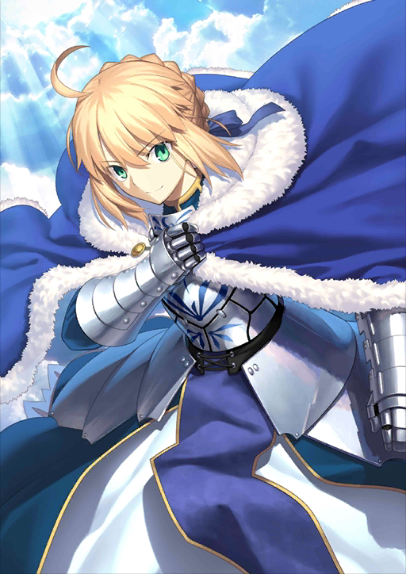
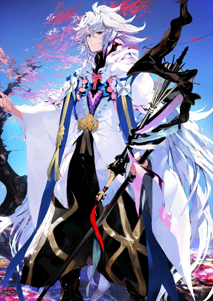
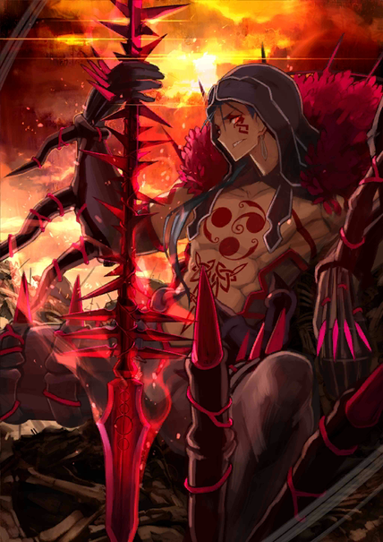

史上最大圣杯战争，于此开幕！
天空的神明啊，现在宣告人智的败北。
双眼已然腐朽，手足已然脆弱，知识已然僵化。
作为最后的人类，在此裁定：
众多的决断、无数的挫折、所有的繁荣，
皆归于无。
借此一击，击坠神明，奏响变革的钟声！
冠位指定/人理保障天球,于此永恒
作为master，吾背后，便是英灵座！
不列颠传说中的王。也被誉为骑士王。阿尔托莉雅是幼名，自从当上国王之后，就开始被称为亚瑟王了。
在骑士道凋零的时代，手持圣剑，给不列颠带来了短暂的和平与最后的繁荣
金色从者,古国乌鲁克的英雄王
他是一位想要将世间万物皆纳为己有的傲慢的从者。尽管因其为人处世的态度无比自大傲慢而让人很难亲近他，但他确实拥有当得起自己那份自以为是的才能。

安定的语调，温和的举止，却具备了难以想象超强战斗能力的“拥有意识的宝具”。曾被英雄王吉尔伽美什誉为最强之人，连接天与地之锁。
既是由众神之手所造的人偶，亦是自然与调和一体化的大地分身。
作为英雄王唯一的友人，曾与其经历许多冒险，获得人之心之后，却最终以人偶之躯归于尘土的可悲兵器

拥有卓越的千里眼，虽然预见了圆桌的崩溃与不列颠的危机，却没有告知亚瑟王，离开了不列颠。
之后，梅林来到了理想乡阿瓦隆，在那里，他将自己幽禁在了『塔』中。此后也因无法死去，始终见证着人类世界，
直到世界终结为止。
达·芬奇铸造的人造英灵,为了第二次冠位指定而铸造的分身
在成为从者之后依然充满了探求心与上进心。哪怕身为死者之梦，她仍是活在现代（当下）的存在。
小达·芬奇也不会改变这种存在方式。为了获得最大的成果，她也日夜奔走拼命努力着。然而她的确对输出降低的自己怀有不满与不安。
「我是否像之前的我那样优秀呢？」
满破.png)
冠位之名非吾所需，最强之证仅寄予此一剑之上
在神代的终末，牺牲冠位，第一次给予回归之兽【提亚马特】以【死亡】的概念

凯尔特·阿尔斯特传说的勇士。赤枝骑士团的一员，同时也是阿尔斯特的最强战士。
凭借由异界「影之国」的盟主斯卡哈所授予的魔枪而威名远扬。
不同于往常，作为Berserker而现界,
性格也发生了反转。表情冷酷，其所持有的魔枪，亦散发着不祥的气息。
